He was only five years old when the Great Plague broke out so could not remember it. To describe it, nearly sixty years later, in his novel, Daniel Defoe needed to dust off faded diaries, survey old medical pamphlets and query archival statistics. Well done research paid off. For decades the readers of “A Journal of the Plague Year” were thinking they are reading genuine memoirs of the 1665’s Great Plague eyewitness. Concerning statistics included in the “Journals”, they cannot be said deluded, though. These were real and for their substantial use, we can call the “Journal” a data-based fiction. And data-based fiction is never closed for augmentation: data can speak more than the author transmitted. I want to give them a voice once again in this letter. A letter to “Journal’s” narrator, from a data scientist writing in the second plague year.
Sir,
You must be not surprised any longer, I presume, by a stranger’s letter like this when it concerns your Journal. Previously read by few, to satisfy their specific curiosities, it is now chased by many, seeking universal experience. The opposite way of popularity is far more common for books getting old, yet with so many things turned upside down nowadays this phenomenon, peculiar by itself, lacks no companion in strangeness. Since the Journal was written for advice such a state of affairs must bring you, Sir, a good deal of satisfaction. I hope it is not overshadowed by observing how much your descendants really learned from your observations for that is a different matter. I shall not discuss it here, at least not to make a fool of myself claiming firmly what wiser doubt and debate. But the similarity of experience is not doubtful. A numerous generation of your newest readers looks at citizens of London from 1665 like at the mirror image of themselves and their contemporaries. We see and learn to see negligence and overprotectiveness, superstition and obstinacy. We meet those who believe everything people say about contagion but do nothing against it and those who do everything they can yet believe nothing sufficient so seek more and more preservatives. We must be only thankful that no comparison can be made in facing the most difficult calamities for the plague of our days is so less severe that we have not been shaken thoroughly nor tested for despair.
Of our affairs and their connections with yours, you must be, Sir, already well informed. Messrs. Dasgupta, Jha and Sarangi, for example, gave you a detailed account of similar propensities in behaviour during past and present outbreaks. I feel therefore no need to pour out more words to discuss them and rather turn my attention to notions you made not by observation of people but of numbers in the bills of mortality. Such a confinement is against your, Sir, own preferences, I suspect. You find superior what you can see over what you imagine, what you witness over what you estimate. But you must acknowledge: to give a complete account of events, from time to time, you cannot help but furnish your mind with notions like the plague reaching its uttermost violence in September and then cooling down, spreading at first in St. Giles in the Fields and Holborn, then moving gradually towards the west and inside City walls. Notions coming not from simple observations but inferred from accumulation of events and testified by numbers in bills. Are they accurate and free of error? Of course, they are not. Has anyone seen rather than imagine the plague moving from one place to another? No one, indeed. So is it not true that such observations, taken from bills, can only give an auxiliary understanding of events? Not so, I dare to suggest. They can be distinguished after all, Journal a witness, from mere rumours, like that people from countryside supplying markets were at little risk of contagion. As a fruit of collective effort, bills and notions derived from them are sources of knowledge of unparalleled comprehensiveness, even after taking into account their inaccuracies. The image they offer may be blurry, but the view point is unique. Since I recently found a finely edited collection of London weekly bills of mortality, I wish to humbly offer you some extending comments and illustrations to what you put in the Journal. I’m quite aware that others have offered you such services before me, let me just remind works of Digital Research Center at Hofstra University or The Guardian’s journalists, but please accept mine as well as a token of gratitude for a reading for my quarantine in August, last year.
Before I go to the matter, though, I wish to mention something that [always] strikes me when I think of consulting bills of mortality or infection (there are such nowadays). Especially, when I recollect how it was done in the early days of current visitation. Believe it, Sir, or not: gazing at numbers and longing for reports can do as much harm as good to one’s wit if not more. When the contagion was already spread abroad but only a few sick were found at my homeland, everyone was looking for new numbers, not week by week but several times a day, running from one newspaper to another, turning to gossip when not satisfied and from gossip to quackery. All this in hope to find comfort in awareness, in fact finding only more anxiety. Any person involved in such an endeavour, myself included, could choose from a plethora of reports, tables, charts, maps and all the other means of telling numbers from the aforementioned bills, either domestic or foreign. Alas, scarce and inaccurate accounts could not shine any light, no matter how many times they were repeated. I do not want to say they were all useless, although most of them were, and they brought no utility. Certainly, some writings on the general nature of plague encouraged prudent efforts and some scholars (we call them now “experts”) achieved important results in studying the course of contagion from bills of mortality and infection (which we rather call “statistics” or “data” nowadays). But I do not think I exaggerate saying: the hopes were of the very existence of widespread reports to ease significantly the troubles of plague. And such hopes failed manifestly.
In so speaking I’m preaching contra domo sua, since working with various bills, tables and more complicated accounts is my everyday business. And I must acknowledge, one can add more bitterness to this sermon. Haven’t we, analysts, as we call ourselves, inflated expectations of our work results beyond any sound reason? Haven’t we claimed, inchoately at least, there are abundant possibilities these results open, available just at hand? Then, haven’t we started to believe in those expectations, imagine bits of our dexterity as Promethean gifts and delude ourselves in self-love? It may be so. But I also remember many other professions offering quick and easy remedies from their hands as well at the time the contagion broke out. One particular example comes to my mind. When the decree came out to limit the number of people in shops I read an enthusiastic article about a company which turned to produce people-counting machines. Looks like a proper reaction at the first sight, doesn’t it? And so I thought. But then I found one shop in my neighbourhood, just demanding visitors to use only provided baskets and adjusting a number of those accordingly, with no extra cost for any machines. Maybe a foolish pride is a common vice then? I cannot deny it completely but a different explanation comes to my mind. There were two convictions popular in early days of visitation, pulling minds in opposite directions. The first was that plague must be responded by everyone, immediately and decisively; the second that it will not last for long and in at most a few months everyone will go back to everyday jobs. The first called for extraordinary action, the second not to abandon usual business. It seems to me that among those whose trade has not suffered real troubles, these two convictions brought premature offspring of multiple crafty but useless ideas. But whether it is a true explanation of confusions coming from bills examination I do not know. There are things one can see and hear, those one can estimate and imagine and those, at last, that can be only conjectured.
But I shall speak of numbers you, Sir, cite from the bills of mortality. You know my praise for including them in the Journal but I must confess, throughout my reading, they have not rooted in my mind deep enough as to yield the image of plague dreadfulness. Let me, for example, take a notion of the rising number of burials in St. Gile’s in the Fields in May:
The next bill was from the 23rd of May to the 30th, when the number of the plague was seventeen. But the burials in St. Giles’s were fifty-three—a frightful number!—of whom they set down but nine of the plague; but on an examination more strictly by the Justices of Peace, and at the Lord Mayor’s request, it was found there were twenty more who were really dead of the plague in that parish, but had been set down of the spotted-fever or other distempers, besides others concealed.
Was the number from St. Gile’s frightful because it was already so high or as a signpost for even higher bills? Both sides raise difficulties for my comprehension. First, because I know the usual mortality in your times was much higher than it is in mine. So much, that bills from before the plague would be already considered frightful so I could not imagine what scale you, Sir, and your contemporaries, measured the fear with. Second, because if it was a signpost it was such one I could not read. After all, plagues were also more frequent and there were citizens of London, with you. Sir, among them, who already experienced a scary time of visitation. How much exceptional you found numbers from St. Gile’s, as compared to bills from earlier plagues, I could not see at the first sight.
I did not know therefore what could I compare the events I was reading about to. I have even thought, for some time, that maybe the plague you, Sir, describe was somewhat harsher but still in the same ranks as earlier ones. Visitations from 1646 and 1647, could fit to such a category, I suppose, when I look at weekly burials from before the plague:
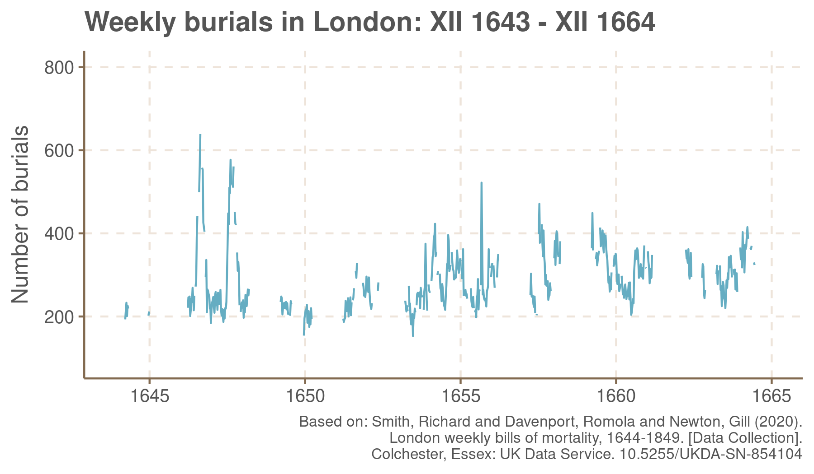
It was only after I saw on a graph what happened in the sorrowful year 1665 when I realised how mistaken I was
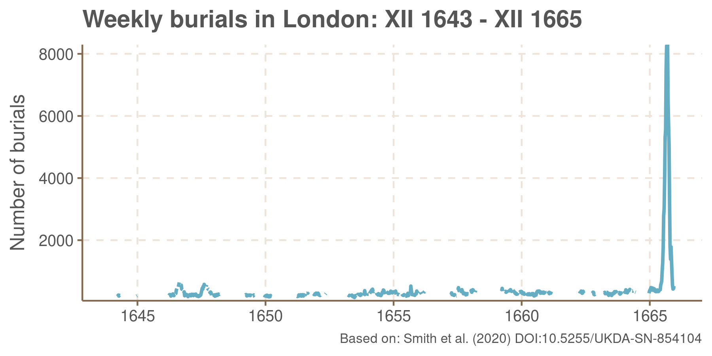
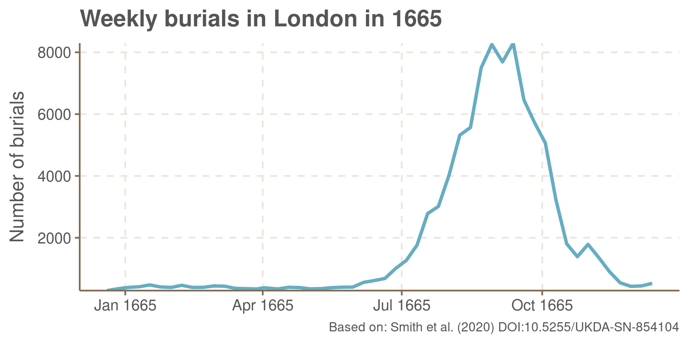
Truly, “The Great Plague of London” deserves its name. Even forgetting that many burials were not recorded in the Bills these numbers look frightful. And even counting the burials not attributed to the plague (either by negligence or purposefully or just rightly) one can see how violent was the contagion.
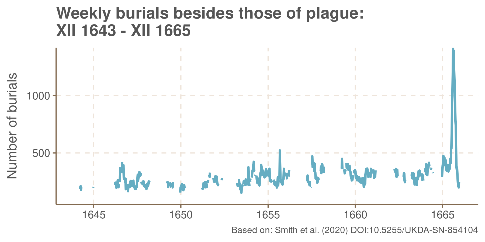
This brings me to my second addendum. As you have written, Sir, in the Journal, some causes of death were used as a disguise for a plague particularly often. You have shown fever, spotted fever, surfeit and “teeth” with accompanying numbers and have mentioned other:
There were several other articles which bore a proportion to these, and which, it is easy to perceive, were increased on the same account, as aged, consumptions, vomitings, imposthumes, gripes, and the like, many of which were not doubted to be infected people.
Let me fill this list in detail. Comparing average weekly mortalities in years preceding the plague year and these from 1665 I have found the following causes of death assigned suspiciously often:
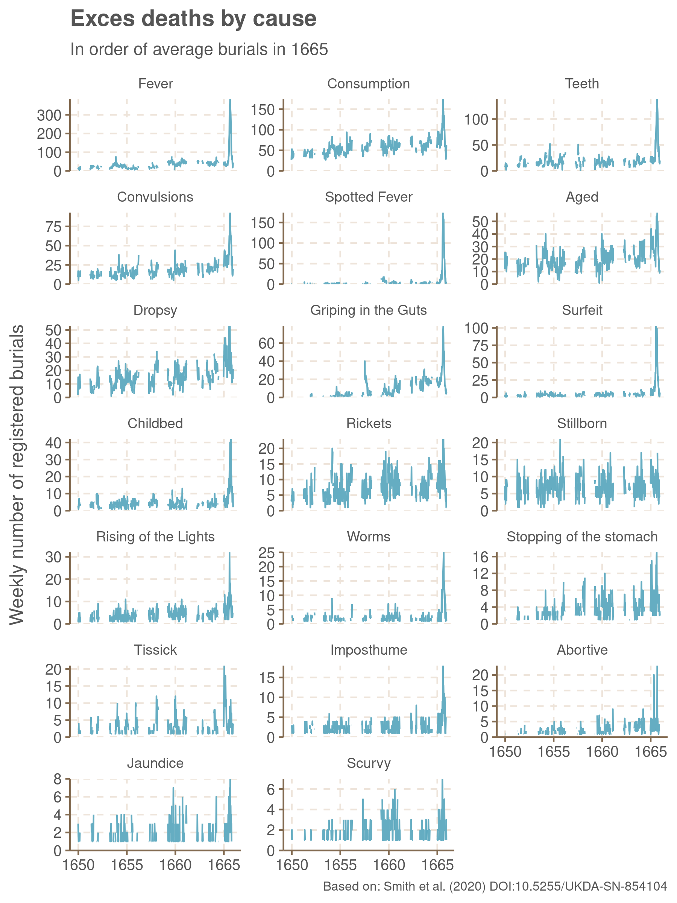
Now, for my eyes, not only the numbers are striking but also the maladies names. Medical dictionaries have changed a lot in the last three hundred years. Terms familiar to you appear completely foreign not only to me, for whom English is not a mother-tongue, but also for my fellow-contemporaries English speakers. After checking here, there and there, I learned the following and kindly ask you, Sir, to let me use some of the modern wording in the remainder of this letter:
- Today’s name for consumption is tuberculosis.
- The name Teeth do not stand for a particular illness but for babies who died while teething.
- Spotted Fever is a symptom, most likely caused by diseases called typhus or meningitis nowadays.
- The definition of Dropsy is “abnormal swelling of the body, or part of the body due to building up of clear, watery fluid”. Its synonyms are oedema and podagra. This description looks very general so I must have look at exemplar pictures to build my comprehension.
- Perhaps native English speakers would easily understand Griping in the Guts but I had to dig for a while to find it is a stomach ache.
- The word Surfeit did not go wholly out of use and preserved “overindulgence in food or drink” among its meanings. Unaware of its common usage I was surprised to see it among casualties characteristic of plague. But then I learned it was often used in connection vomiting, which, as you, Sir, witness, was a common plague symptom.
- Rickets is another term which by preserving its meaning causes even more confusion as its association with the plague is far from obvious to me. The best explanation I have found is that children suffering from rickets are often found to suffer from lung diseases as well.
- Speaking of lungs, you might have seen the word lights used more often for these organs. And Rising of the Lights could, according to my sources, mean any disease which laid upon them.
- Tissick was another condition related to lungs, used when difficulty in breathing was involved, often interchangeably with consumption.
- A contemporary name for Imposthume is an abscess, a collection of purulent matter in a bag or cyst.
It is rather obvious that the diseases listed above looks much like a plague for undilligent observer. More interestingly, groups they form point towards different modes of the plague known nowadays.
But I shall speak of that later. For the time being let me comment on differences between parishes in the severity of plague and time it reached uttermost violence. Your contemporary, Sir, Mr John Graunt complaint in his “Observations upon Bills of Mortailty” on general inequality in population between parishes, writing:
Our Parishes are now grown madly disproportionable […] In the same year were Buried in Cripple-gate-Parish 1191, that but twelve died in Trinity-Minories, Saint Saviour’s Southwark, and Botolph’s Bishops-gate, being of the middle size, as burying five and 600 per Annum: so that Cripple-gate is an hundred times as big as the Minories, and 200 times as big as Saint John the Evangelist’s, Mary-Coal-Church, Bennet’s-Grace-Church, Matthew-Friday-street, and some others within the City.
Like parishes were disproportionate in size, so they were in number of burials according to plague. Apart from the obvious disproportion between more and less populated parishes, observed by Mr. Grant, the disproportion in burials as compared to their usual number is overwhelming. While in some parishes outside the walls, like St. Leonard Shoreditch or St. Mary Whitechappel, the bills were up to fifty times higher than usually, some parishes in the City could be said almost unaffected. For example, in St. Lawrence Jewry the average number of weekly burials from 1650 to 1665 was around one and a half and in the year 1665 it was 2.85, never exceeding 12. To make such differences visible all at once, I have put them on a map.
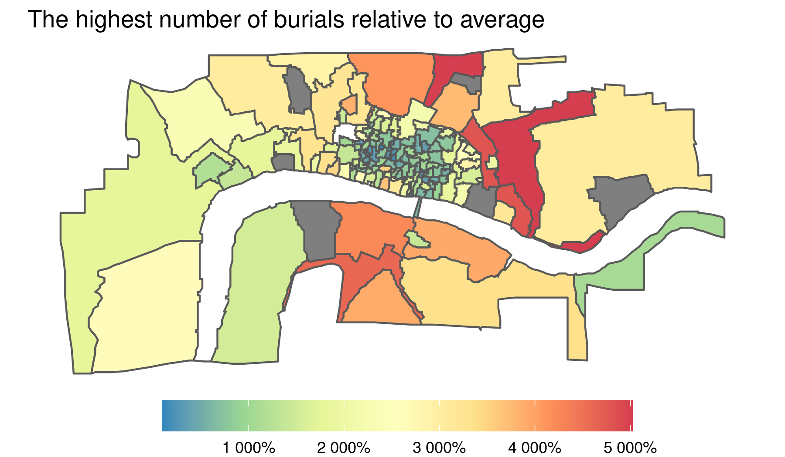
Even I have not depicted City walls at this map, one can easily locate them by looking at the enormous disproportion on the opposite sites of Aldgate, Bishopsgate and Cripplegate. The same applies to poor and populous parishes at Southwark.
Not only different parishes suffered with much different magnitude but also, in different times of the year. I remember a relief you found, Sir, in fact that the plague had not affected the city all at once:
It was indeed a merciful disposition of God, that as the plague began at one end of the town first (as has been observed at large) so it proceeded progressively to other parts, and did not come on this way, or eastward, till it had spent its fury in the West part of the town; and so, as it came on one way, it abated another. For example, it began at St. Giles’s and the Westminster end of the town, and it was in its height in all that part by about the middle of July, viz., in St. Giles-in-the-Fields, St. Andrew’s, Holborn, St. Clement Danes, St. Martin-in-the-Fields, and in Westminster. The latter end of July it decreased in those parishes; and coming east, it increased prodigiously in Cripplegate, St. Sepulcher’s, St. James’s, Clerkenwell, and St. Bride’s and Aldersgate. While it was in all these parishes, the city and all the parishes of the Southwark side of the water and all Stepney, Whitechapel, Aldgate, Wapping, and Ratcliff, were very little touched; so that people went about their business unconcerned, carried on their trades, kept open their shops, and conversed freely with one another in all the city, the east and northeast suburbs, and in Southwark, almost as if the plague had not been among us.
Then, however, you witness how the plague ceased to move gradually and attacked yet untouched parishes almost at the same time. Like the differences in proportions, I found the differences in times of visitation easier to read from a map than from tables, and hence sketched the following one:
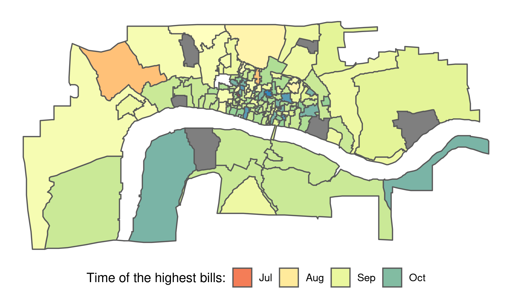
But comparing just the time when did the highest numbers of burials occur can give only a very limited account of differences in plague-spreading. Hence, I made yet another map with all the courses of contagion attached. Although I couldn’t made them visible all at once, I hope such a presentations will unveil more than the preceding one.
During the current outbreak it became a custom to speak about “waves” of contagion. It looks to me as if The Great Plague could be divided into three, overlapping waves:
- The first one, colored brown below was the initial wave at north-west, from St. Gile in the Fields to St. Leonard Shoreditch, a which reached it’s uttermost violence in mid-August
- With two-week delay came the second and the most harmful wave, which laid mostly upon parishes outside the walls at east and at Southwark.
- Then, after yet another two weeks came the third wave, touching severely parishes at East-end, moderately the Westminster and relatively weakly the City.
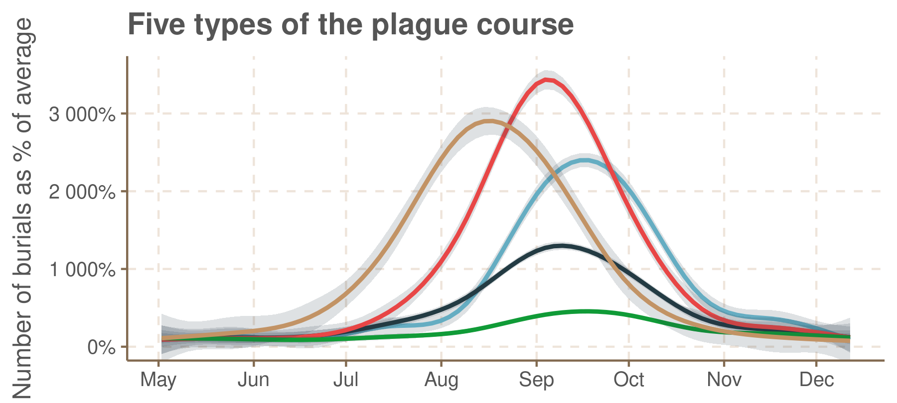
I am not going to push these remarks much more forward since what I could say here was better described almost thirty years ago by Mr Justin Champion in his book London’s Dreaded Visitation: The Social Geography of the Great Plague (see also an excerpt from Epidemic Disease in London edited by him). Hence, having described where and when the plague was spreading l would like to beg your attention to discuss how it was transmitted. Perhaps I should begin with the two views on the nature of disease-spreading, presented in the Journal. The first, apparently popular in wide circles, was that contagion was “in the air”, founded upon observed infections among people having, allegedly, no contact with any ill person:
This [not seeing an ill person] I take to be the reason which makes so many people talk of the air being corrupted and infected, and that they need not be cautious of whom they converse with, for that the contagion was in the air. I have seen them in strange agitations and surprises on this account. “I have never come near any infected body,” says the disturbed person; “I have conversed with none but sound, healthy people, and yet I have gotten the distemper!” “I am sure I am struck from Heaven,” says another, and he falls to the serious part. Again, the first goes on exclaiming, “I have come near no infection or any infected person; I am sure it is the air. We draw in death when we breathe, and therefore ’tis the hand of God; there is no withstanding it.”
You, Sir, hold the opposite view, namely that distemper could only be received from those already infected or their belongings:
The acute penetrating nature of the disease itself was such, and the infection was received so imperceptibly, that the most exact caution could not secure us while in the place. But I must be allowed to believe—and I have so many examples fresh in my memory to convince me of it, that I think none can resist their evidence—I say, I must be allowed to believe that no one in this whole nation ever received the sickness or infection but who received it in the ordinary way of infection from somebody, or the clothes or touch or stench of somebody that was infected before.
As far as I know, these two views are representative for a discussion lasting for ages, up until the late 19th century. They became conventionally known under the names anti-contagionism and contagionism. Although I could safely assume, you are, Sir, already informed of it, let me tell, that you were generally right in your view. Contagionism, in the form of germ theory, eventually won the debate. Your explanation of contagions received without, apparently, facing anyone unsound, namely that it was received from people infected but showing no symptoms, for the time being, was found partially true. Partially, because there are also other ways for such invisible contagions to occur. Speaking more precisely, germs of the plague are transported in droplets of saliva and attack man’s lungs (or lights, if you prefer). This way of plague-spreading is nowadays called a “pneumonic plague” and it is known that one can spread pneumonic plague before he begins to suffer from it. But there is also a second way of transmission, indeed, a more common one, you, Sir, have not thought of, and capable of accounting for more cases, especially those unnoticeable and involving clothes of infected. In this way, a plague does not lay upon lungs but grows in blood, brought there with a bite of infected flea or louse. A man with such affected blood suffers swellings and buboes on the body, hence the name “bubonic plague”. When one gets the plague from a louse-bite he or she can at least suspect it happened in proximity with someone infected or their belongings and cautious avoidance of such circumstances helps avoid the contagion. From fleas, on the other hand, it is harder to escape since they are carried by rats and that way the distress might be transmitted unexpectedly and unnoticeably. Of those two modes of plague the pneumonic is far more dangerous, or speaking plainly: terribly fatal. Who gets it, dies almost inescapably. The bubonic plague is not as frightful but frightful nevertheless: only about one third survive this distemper.
Here it is well visible what I only signalized before, namely how diseases that went into the bills of mortality instead of plague can be grouped by their symptoms vis a vis different ways of plague transmission. So consumption, tissick, rising of lights and rickets were likely a disguise for pneumonic plague since they all affect the lungs. Likewise spotted fever, dropsy and imposthume are similar to bubonic plague in causing tokens or buboes on the body, easing accidental or purposeful misclassification. Since bubonic plague causes stomach malfucntion it is also not difficult to see why digestive maladies appear in the bills so frequently.
You might ask, Sir, how can I justify a claim I made above that bubonic plague can better account for numbers recorded in mortality bills than pneumonic one. Since it was studied how quickly the disease spreads in each way of transmission, I could compare hypothetical courses to how quickly the bills were actually rising or falling. If, for the sake of example, it was calculated that in a city like London it takes one month for the bubonic plague to reach the size it had in fact reached, it would count as evidence against this nature of epidemics since the plague was developing for several months, not one. Whereas concordance between calculated and actual plague development counts as an evidence for the basis of calculations.
To be more precise, let me show you, Sir, reckonings for the pneumonic plague, as they are the simplest. You can consult the article I took my method from for a detailed exposition of models of bubonic plague, involving either lice or flees. Let there be, at some time, \(S\) people susceptible to infection and \(I\) already infected. Now, assume each infected person meets, on average, \(\beta\) people for long enough to infect them. There will be more infected after these meetings but probably less than \(\beta\) more since some of the met people were infected already. We can assume that on average, \(\frac{S}{S+I}\), a fraction of susceptible in the whole population, among \(\beta\) people an ill person meets would turn ill afterwards. So after some time, \(I \beta \frac{S}{S+I}\) people will be no longer susceptible but actually infected. Likewise, after some time a fraction \(\gamma\) of infected people will die, reducing the number of infected. Hence after some time, the number of infected would decrease by \(\gamma I\).
Instead of thinking of such processes as taking discrete steps, it would seem more natural to consider continuous change and use a method of differential equations (or fluxional equations as your fellow-contemporary, Sir Isaac Newton, called them, while introducing in 1671). Denoting changes in number of susceptible, infected and dead respectively by \(\frac{dS}{dt}, \frac{dI}{dt}, \frac{dD}{dt}\), we have a following systems of equations describing a development of pneumonic plague:
\[\frac{dS}{dt} = -I\beta\frac{S}{S+I}\]
\[\frac{dI}{dt} = \beta\frac{S}{S+I} I - \gamma I\]
\[\frac{dD}{dt} = \gamma I\]
What are the numbers behind \(\gamma\) and \(\beta\)? The first comes from medical studies [add link] and it was established to be equal to 0.4, on average. The second, though cannot be found experimentally. But with automated computation methods available nowadays it is possible to look for the value which fits the best with observed quantities. I looked in the same way at two other unknowns: the initial numbers of susceptible and infected people (I simply assume one person was dead in the initial week). My initial guesses were that a contagious contact happens once every two days (\(\beta = 0.5\)), that half of the three hundred and sixty thousand heads (I follow Mr Graunt’s estimates here) were present in London and susceptible to disease, and that the plague spread from four people. But it appears that if these were true numbers, the plague would look very differently:
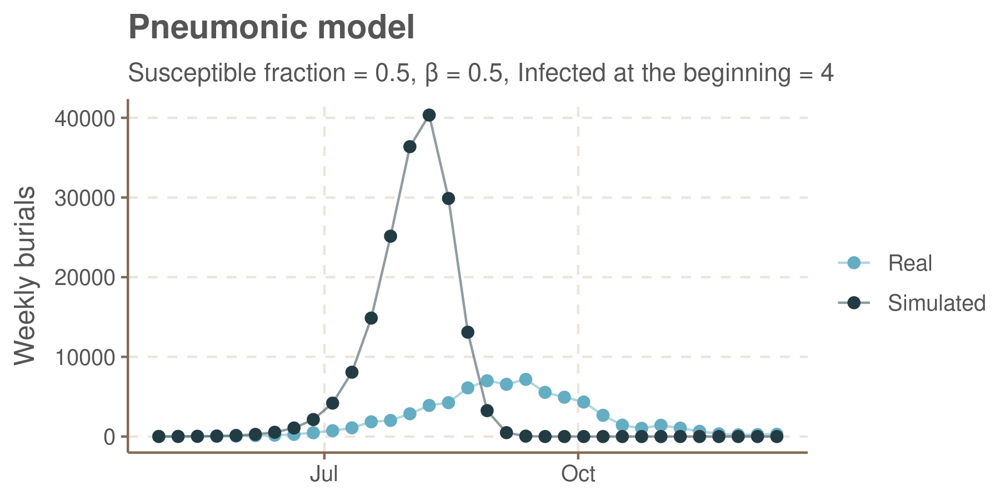
The best numbers I could find for pneumonic plague were \(\beta\) equal 0.45, the fraction of susceptible population being 0.18 (suspiciously low) and \(I_0\) (the number of infected at the beginning) equal 11. Under such conditions the course of the plague would be much closer to the actual:
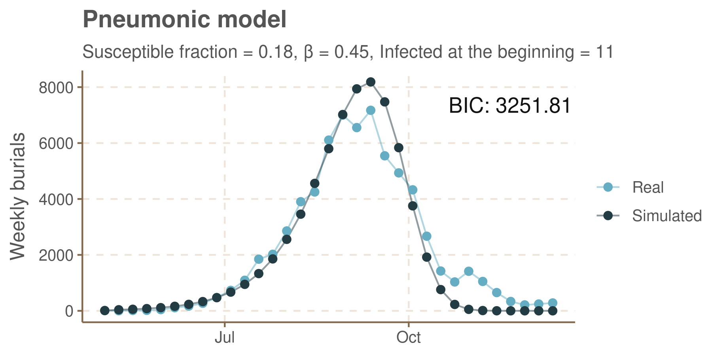
In the top right corner of the figure above I wrote down the value of measure I use to assess goodness of fit and parsimony of assumptions, called Bayesian Information Criterion. The lower is this value, the better, which forces me to the conclusion that the best account for the sorrowful events of the year 1665 can be given by bubonic plague models involving transmission mediated by rats. Not only it is the best fitting model but, unlike other’s, its parameters do not make me raise my eyebrows. The fraction of susceptible population at the beginning of the plague was estimated at around 0.77, more sound than 0.18 (pneumonic) and 0.34 (bubonic transmitted by lice).
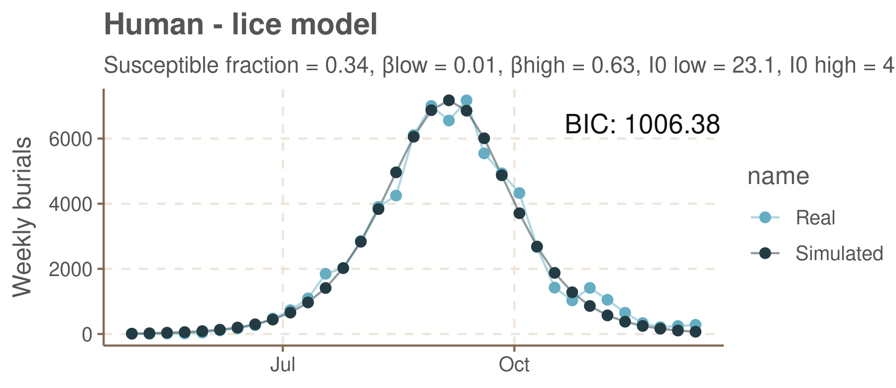
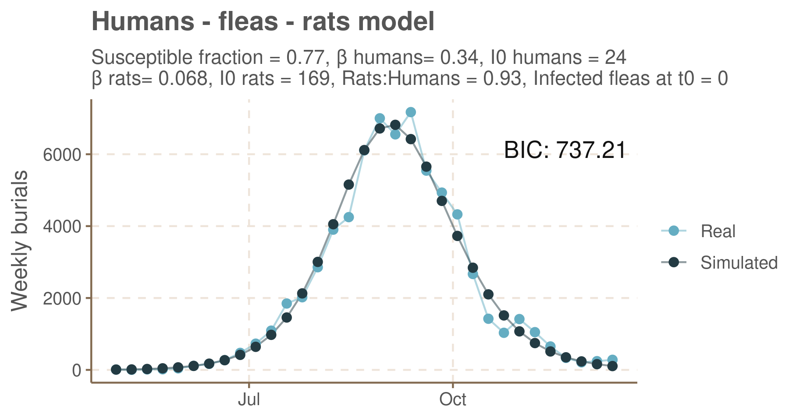
This result is different from reckonings in the aforementioned article. Authors analyzed several plagues there and concluded that bubonic plague transmission through lice rather than rats reckons the best for the plague development. I must acknowledge, though, that I have parted from details of their methods in few places. Firstly, I assumed continuous change and used fluxional equations whereas the authors relied on disconnected changes. Secondly, I used a different method of searching for optimal parameters (maximum likelihood estimates instead of maximum a posteriori estimations from MCMC driven Bayesian inference. There is no space here to discuss the difference here). Thirdly, I loosened the assumption, very restrictive in my opinion, that human and rodent populations were equal. I treated a proportion between them as an additional unknown. Had I used the original methods and assumptions I would reach the same conclusion as the authors of the original article, but that is mostly because, for pneumonic and bubonic-rat models, even the best parameters their methods could find for the Great Plague yielded calculated courses of contagion very different from actual ones.
If two computation methods of the same models give so different results it speaks against their credulity and I would be not surprised hearing you, Sir, took somewhat sceptical view towards these results. And there are more concerns to be raised (I take them from a critical letter about the paper I follow). Firstly, why are modes of transmission treated exclusively? It is after all quite probable for someone suffering bubonic plague to infect another one by sneezing or coughing at him, hence transmitting pneumonic plague. A simple answer is that a model with mixture of all three modes of contagion will have too many unknowns and several, wholly different sets of parameters could be claimed best fitting ones. However correct, this answer is of course deeply unsatisfactory. It rather begs not to treat the question of nature of transmission as answerable with honest certainity. Secondly, there are problems with calculating uncertainty in these models. I wrote, for example, that medical studies established that people infected with bubonic plague die, on average two and a half day after infection (reciprocal of \(\gamma\)). But this is only an estimation, necessarily burdened with uncertainty. Yet this uncertainty is not acknowledged in calculations. Thirdly, there is a problem of initial probabilities for various parameters. I wrote above that, luckily, the fraction of susceptible among Londoners looks very reasonable in the best among tried models. It should not be a matter of luck, rather how initially probable or improbable the value of parameter is, should be included in the search for its best fitting value.
Given all the problems above it looks reasonable to approach these models and their results only with a great caution. Frankly, the newspapers describing this study adopted the opposite approach. Here is the most moderate one:
- National Geographic: Maybe Rats Aren’t to Blame for the Great Plague of London
The title is little surprising since neither the described study had not investigated the Great Plague, nor, seemingly, had journalists on their own. But they correctly acknowledge uncertainty. Since the article claims to be applicable for plagues which occured in Europe during longer period of time, year 1665 included, this title is not overall blameworthy, even if inaccurate. But other publishers apparently cannot swallow what is not definite and unambiguous:
- CBC: Black Death spread by human fleas and lice, research shows,
- BBC: Black Death ‘spread by humans not rats’,
- The Independent: Black Death was caused by humans not rats, says study.
Some even put more emphasis:
- The Washington Post: The classic explanation for the Black Death plague is wrong, scientists say.
Yet in some quarters it is not emphasis what attracts the readers. It is wild exaggeration. Even if some are not brave enough to report without caution:
- The Telegraph: Black Death plague spread by dirty humans not rats, study suggests,
the others see no problems in crossing such barriers:
- Evening Standard: Black Death plague ‘spread by dirty humans and not rats’, study finds.
I do not know whether journalist were always of such a temper but this maybe possible. I remember a story about one journalist, from the 18th century if I can trust my memory, who had not just twisted some report but wholly fabricated an account describing the plague outbreak, and did it so reliably and so convincingly that his readers were mocked even if reaching this work decades after it was written. I only wonder how would journalist of future describe the events of the current outbreak when there is so much confusion in works of their fellows who are not separated from events their describe with the barrier of time. I guess your experience-born wisdom may give me some clues but I do not know whether I could be entitled to receive a letter back from you, which circumstance, while unfortunate, does not prevent me from
remaining
your, Sir, most humble and obedient servant
A.Cz.
Post scriptum to modern readers: The code I have used to write this letter is available at https://github.com/aczepielik/journal-of-the-plague-year.